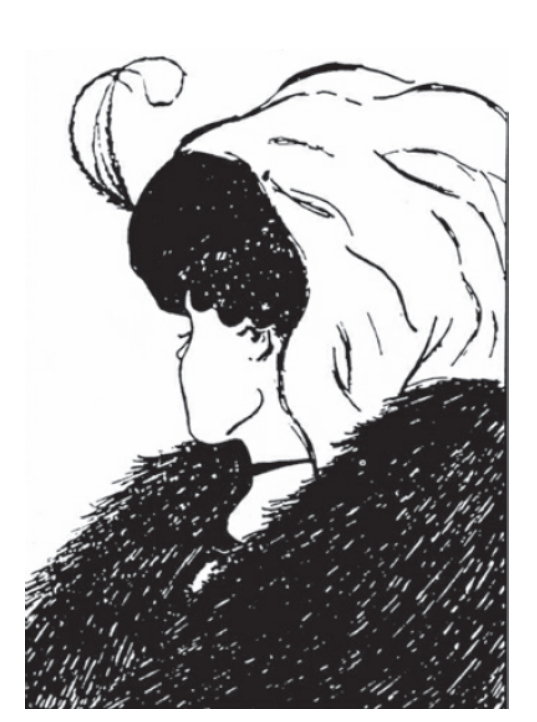

收录于合集 #著作推荐 12个

新书简介
《棋盘与网络：网络时代的大战略》
[美]安妮-玛丽·斯劳特 著
唐岚 牛帅 译
出版社：中信出版社
出版时间：2021年9月
定价：69.00元
政客和外交家长期以来将世界看成一个棋盘，在一场永无止境的战略优势博弈中分析大国的决策，预判各方的反应。然而，当今世界互联互通，国家、组织、机构、企业、个人等各类行为体共享全球舞台，网络权力成为新的权力形态，博弈论不再适用于解释和处理当前全球所面临的多种问题。《外交政策》杂志连续四年评选出的“全球100位思想家”之一安妮- 玛丽·斯劳特打破棋盘与网络的界限，提出了一套新的网络战略理论。斯劳特认为，尽管目前各领域中棋盘式的竞争关系仍然存在，但网络时代的问题势必需要网络化的应对方式，我们必须学会理解、塑造并建立网络联系，打造全新的“网络战略思维”。作者介绍了恢复力网络、任务网络和规模网络三种具有不同结构和作用的网络类型，阐述了建立网络领导力的方法，同时明确了构建网络大战略的重要意义。本书提出了一种全新的思维方式，为政治、外交、军事、经济、商业、管理等众多领域的问题提供了网络化的思考角度和解决方法。
作者简介 ****
安妮-玛丽·斯劳特（Anne-Marie Slaughter）, 国际法学家、外交政策专家、政治学家和政策评论家，普林斯顿大学伍德罗- 威尔逊公共与国际事务学院院长，2009年年初出任美国外交部政策规划司司长，曾被《福布斯》评为“全球迷人女性”，著有《世界新秩序》及《我们为什么不能拥有一切》，作品入选《华盛顿邮报》、《经济学人》、美国国家公共电台2015年度书籍。2013年至今，斯劳特担任新美国基金会主席兼首席执行官。
目录
前 言
第一部分 网络的世界
第一章 大国与全球化
第二章 网络无处不在
第三章 棋盘视角与网络视角
第二部分 连接的战略
第四章 恢复力网络
第五章 任务网络
第六章 规模网络
第三部分 权力、领导力和大战略
第七章 网络力量
第八章 网络领导方式
第九章 大战略
结 论 治网方略的崛起
致 谢
参考文献
图表注释
精彩书摘
政客和外交家一直以来接受的都是这样的教育，即将世界看成一个棋盘，在一场永无止境的战略优势博弈中分析大国的决定，预测敌人的反应。《棋盘与网络》的作者安妮- 玛丽·斯劳特指出，相较于制定威慑、与他国政府合作及协作的策略，建立一个网络——出于特殊目的、使用特殊方式把人与机构连接起来——要好得多。当我们能看到一个更丰富、更精准、更立体的世界时，我们就能制定出兼顾冲突和合作的连接策略。
棋盘视角与网络视角
看到这张图片时，大多数人第一眼看到的是一个老妇人，有着大大的鹰钩鼻，薄薄的嘴唇。然而，换个角度看，她的嘴巴变成了一个年轻可爱女子脖子上的项链，她的脸扭向另一边。老妇人的鼻子变成年轻女子下巴的大致轮廓。这张图片就是著名的认知错觉，诀窍是学会如何在同一张图片的不同图像之间轻松地转换视角。

年老还是年轻？著名的认知错觉图“我的妻子和我的岳母”，漫画家W.E.希尔创作于1915年，灵感源自1888年左右一张不知名的德国明信片。
棋盘与网络也是一样的。
你看到的世界是什么样的？你是否看到了国家之间的相互制衡，以及不时就权力政治而进行的无休止的博弈？你认为国际组织和机构自身有权力吗？你觉察到全球企业、恐怖分子、毒品和武器走私者、人权组织、环境和宗教团体都在追求各自的利益，并试图按照自身的意愿塑造世界吗？不同的国际关系理论提出了不同的本体论。学者、专家和政策制定者研究“世界”或“国际体系”，从中发现差异。
20世纪90年代的全球化建立在60年代和70年代全球化的基础上，全球网络的编织使基欧汉和奈《权力与相互依赖》一书得以诞生。国家和人民之间日益增多的关系网创造了国际体系的新图景， 在这个新图景下，对大多数国家和人民来说，连接是最主要的关系 。 艾布拉姆和安东妮娅·蔡斯甚至重新定义了主权，认为它不仅意味着不被干涉，也意味着参与国际组织和网络的权利。
下棋人和网络人
为了便于论述，我们假设传统地缘政治的参与者——下棋人——大多对“经济人”了如指掌。他们设想了一个理性收益最大化的世界，并把这种想法移植给国家。英国帕麦斯顿勋爵用一句政治家一直在引用的话抓到了这种情绪：“ 没有永远的朋友，只有永远的利益 。”
全球网络的缔造者——网络人——更多关注人而非国家。他们对人的行为方式有着不同的看法。社会心理学家苏珊·菲斯克准确地把握了社会人的实质，她把人类看成“社会生物”，即人“被鼓励从属于某个群体，形成社会共识，有效地控制人际关系，强化（尊重或至少是完善）自己，默认情况是信任他人”。从这个观点看，利己主义超越了自身。事实上，社会心理学家、神经科学家、进化生物学家和人类生物学家确实得出一个结论，“进化适应性明显有利于有群体导向的人”。向社会寻求帮助，向连接的情感和影响敞开心扉，可能会增加我们基因的繁殖机会。
然而，无论他或她行为的进化论起源是什么，“社会人”寻求归属和联系的动机首先是一种原始欲望而非工具欲望。从这个角度看， 人与人之间的联系，和吃饱肚子一样重要，一样能维系生命 。 它本身就是目的，而不仅仅是实现目的的手段。以一种方式将人与人联系起来，共同努力，从而增加个人的幸福感，而不管这种努力是什么。在1995年对福朗西斯·福山《信任》一书的评论中，法里德·扎卡利亚指出，连接不一定都是积极的，他认为，俄克拉何马城的联邦大厦炸弹恐怖事件的主谋曾与志同道合的阴谋论者参加过保龄球联赛。然而，网络人可能真是和下棋人不一样的动物，他们会屈从于不同的影响，动机各异。
追求深层次、完整联系的人类与那些影响利己效用最大化的人，会对截然不同的激励做出反应。相较于接触、沟通、规范、社会化、身份和共同目标，奖励、监督和惩罚也许效果更差。他们之所以分享，不是出于互惠的算计，而是出于分享带来的心理愉悦。那些追求连接的人听从内心和头脑的决定，会受情绪、公平、同理心和直觉的影响。他们的行为、思想、感情，甚至个人特性都与社会高度相关。
治国方略与治网方略
几个世纪以来，政治家一直在下棋，他们的战略的确形成了治国方略。杰出的外交家丹尼斯·罗斯认为，治国方略是“使用一国所拥有的资产或资源和工具（经济、军事、情报、媒体）去追逐自身利益并影响其他人的行为”。这些战略基本上是冲突战略，或者至少是竞争战略： 下棋就是为了获胜 。
然而，胜利都是有代价的。《冲突的战略》教会美国决策者如何跟苏联博弈，在不毁灭世界的情况下让美国博取更多的利益。在一个核世界里，有限冲突是可以接受的，但全面开战则不行。把军事家克劳塞维茨的名言反过来说，大国间的外交是另一种方式的战争。
大国之间的冲突战略仍然具有高度相关性。就更大范围而言，全球194个国家一直在通过各种方式相互竞争，力图在一个由物质和文化实力的特定分布所定义的世界中，以自治、独立的身份促进自身利益最大化。传统的治国方略依然有它的一席之地。
但当我们转向网络世界时，促进国家利益、实现全球目标的战略组合几乎是看不到的。我们知道如何联络国家组成联盟，对伊朗实施制裁，与伊朗政府谈判，以确保它不制造原子弹。但我们并不知道如何与伊朗人民建立商业、教育和社交网络，这些网络可以提供抵抗政府宣传的恢复力，或者建立合作的学术和研究网络，在两国发起新项目等。
对全世界人民来说，外交政策的标准路径是“连接和聚集”：开会、交流、创建工作组或任务组，或者最近的促进公私伙伴关系。但我们没有连接的策略，不知道谁与谁连接、怎么连接、在哪里及何时连接，从而实现具体的外交目标。这种网络策略可以像任何棋盘游戏那样微妙和复杂。它们需要被开发、研究、测试和完善。外交政策参与者同样需要精通治网方略。
这些网络策略比其他许多棋盘策略目光更长远。建立网络需要时间。但对这项工作付出的耐心和心思是会得到回报的。
想想美国长达几十年遏制苏联的战略。除了与别的国家建立联盟，美国政府和许多美国公民社会组织还为波兰团结工会、捷克斯洛伐克地下组织、民主德国的教堂团体等类似的组织提供支持和有恢复力的网络。这些网络出现了多年。甚至几十年，只有当机会出现时，它们才会积极参与国家政治。这些组织现在还在那里，它们秘密地支持反对派，并一直在悄悄地扩大行动。为反对派提供经费、信息和物质支援，并不像对另外一个国家实施制裁或威胁使用武力那样招摇。但从长时间看，这样反而更有效。
如果我们能够帮助创建这些网络，更多地学会构建和支持它们，使它们的恢复力、行动力和规模最大化，会出现什么结果？我们不是让它们出现或是希望它们会出现，而是要积极孕育并帮助它们成长。不是通过煽动反对派或私下给叛乱组织提供资金，像各国情报部门一直都在从事的工作那样，而是要形成一整套外交政策工具，在一个由某种特定连接模式塑造和驱动的世界里，实现促进利益和解决问题的目标。
（摘编自《棋盘与网络》第三章）
名人推荐
无论是政策制定者还是普通公民，都应该阅读本书。安妮- 玛丽·斯劳特承担了一项艰巨的任务，她在这个政府只是关键角色之一的互联互通的世界里，重新思考大战略。毫无疑问，一个开放秩序的世界将更加繁荣和安全。《棋盘与网络》一书就如何到达那里进行了重要的论述。
——康多莉扎·赖斯
美国前国务卿
这本书是目前在世的非常伟大的外交政策思想家之一对地缘政治的深刻见解。它对任何国际关系专业的学生或从业者来说都值得一读。随着时间的推移，这本书的观点只会变得更加重要，并被事实证明是正确的。
——埃里克·施密特
谷歌Alphabet公司执行董事长
聪明，富有想象力……这本书在当今世界权力与相互依存的思考中，是一个重要的分水岭。
——约翰·伊肯伯里
普林斯顿大学政治系教授
安妮- 玛丽·斯劳特运用跨学科的方法整合了传统地缘政治的棋盘思维与全球化、信息化时代的网络思维。她敏锐地指出，在互联互通的全新时代，国家既是一个统一的行为体，又是网络化世界的节点，这不仅是理解国际局势的出发点，也可以为探索网络社会治理带来启迪。
——周宏仁
原国家信息化专家咨询委员会常务副主任、研究员
斯劳特从恢复力网络、任务网络、规模网络三个视角，分析了网络空间的权力和领导力，提出“开放秩序构建”的大战略，呼吁参与者 “思考如何把棋盘世界的联盟转变为连接和能力的中心”。书中的许多观点，对我们构建网络空间命运共同体不无启示。
——张力
中国现代关系研究院副院长，研究员
安妮- 玛丽·斯劳特凭借对当今世界进入网络化格局的敏锐感知，认为网络权力已成为新的权力形态，棋盘博弈的传统思维逻辑不足以解释和应对当前全球面临的诸多挑战，我们需要全新的“网络战略思维”，用棋盘和网络的双重视角分析当今世界政治经济形势，并使用不同的网络模型提升网络领导力。这本书对广大读者更深入地理解世界格局、把握时代脉搏，以及对各领域的领导者提升网络时代的治理能力具有重要的参考价值。
——郎平
中国社科院世界经济与政治研究所研究员
编辑推荐
如果我们讨论当今世界处于什么状态，“网络化”这个词首当其冲。有形与无形的网络改变了一切，甚至定义了我们。《棋盘与网络》一书基于这个大的时代背景，探讨了如下几个问题：
（1）与传统的“棋盘”时代相比，网络时代有哪些独特的特征？
（2）如何运用网络的方式，解决网络时代的问题？
（3）为什么“连接”如此重要？
（4）如何建立网络思维，重塑网络世界观，强化网络领导力？
本书介绍的理论与方法适用于多个领域，无论对政策制定者、企业管理人员、专业学者还是互联网从业者，都有较高的参考价值。阅读本书，读者可以建立一种崭新的思维范式，并应用于对如下问题的思考：
（1）如何在复杂的网络环境中重新思考国家战略与外交政策？
（2）如何重新认识企业的生存策略，并指导行为与决策？
（3）如何优化内部管理结构，充分发挥团队、人员在组织中的作用？
排版 | 胡蝶